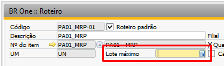
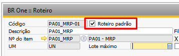
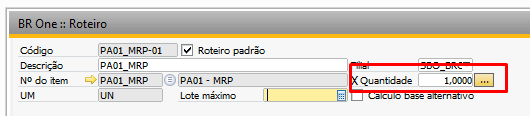
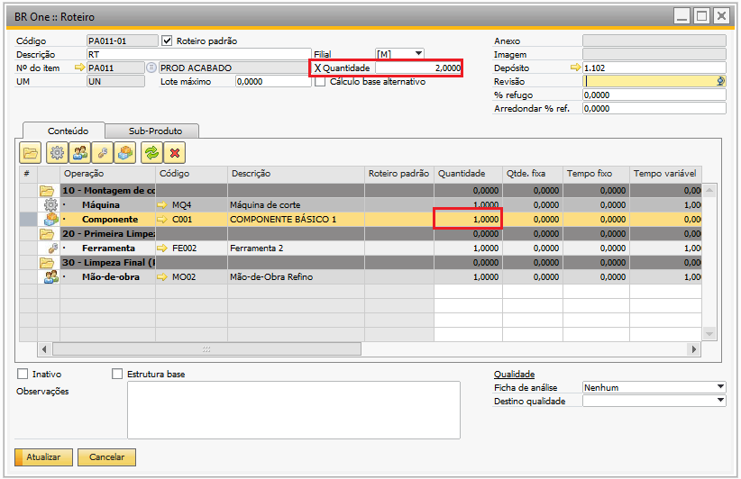
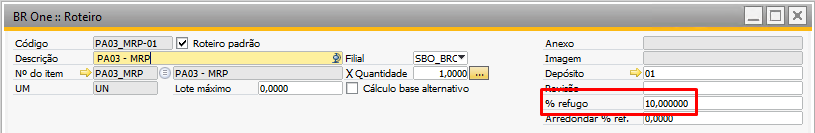
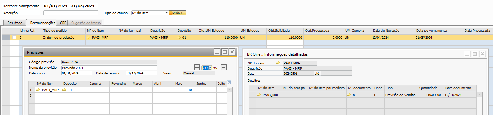
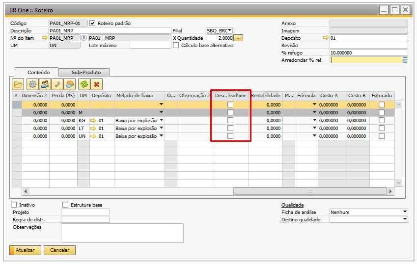
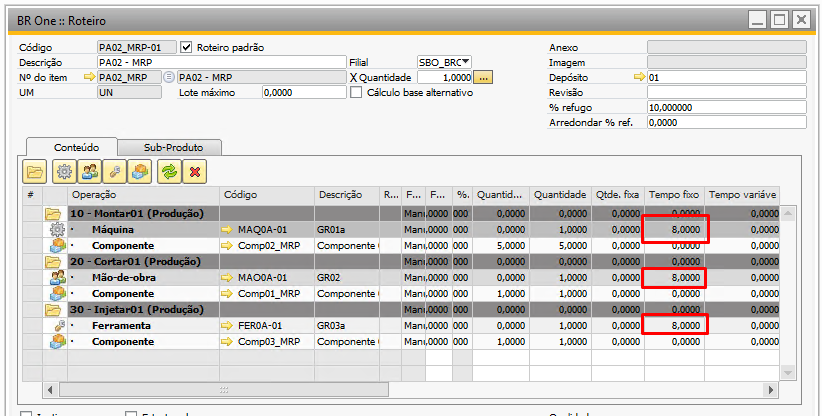
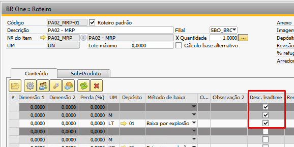
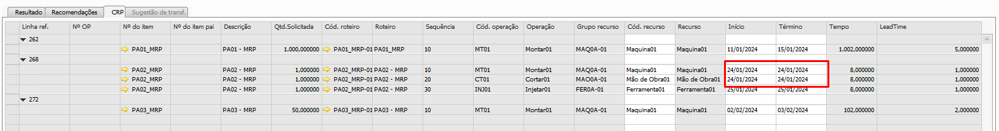

Configurações do Cadastro do Roteiro
No cadastro do roteiro são levados em considerações alguns campos para realização das recomendações.
Lote máximo
Para itens de produção (em que o método de suprimento é produzir) o ‘Lote máximo’ é informado no cadastro do roteiro:
{kind=link}
É possível visualizar um exemplo da utilização do lote máximo para itens de produção no MRP no tópico Lote máximo da Etapa 4.
Roteiro padrão
Somente os roteiros padrões são levados em consideração para o processamento de uma ‘Ordem de produção’. Na tela do ‘Roteiro’ este parâmetro é configurado através do flag ‘Roteiro padrão’.
{kind=link}
Quantidade PA
Este parâmetro indica a quantidade do produto acabado produzido por roteiro, essa quantidade será importada para a ‘Ordem de produção na inserção da mesma. Importante notar que a quantidade dos componentes sofrerá alterações, isto é, a quantidade do componente inserida no roteiro será dividida pela quantidade do cabeçalho.
{kind=link}
Para o caso acima, o PA01_MRP tem configurado uma quantidade de produção de 1 unidade, ao inserir uma ‘Ordem de produção’ para este item, o campo ‘Quantidade planejada’ será de 1 unidade.
No caso abaixo, a quantidade do roteiro do item PA011 foi alterada para 2. É necessário 1 componente C001 para a produção, ao inserir uma ‘Ordem de produção’ com este roteiro, o campo ‘Quantidade planejada’ será preenchido automaticamente por 2 e a ‘Qtd.base’ será de 0,5.
{kind=link}
{kind=link}
% refugo
O parâmetro indicará que ao recomendar uma ‘Ordem de Produção’ que valida o ‘% de refugo’, e o campo estiver com algum valor informado.
{kind=link}
A quantidade sugerida no MRP será acrescentada com o percentual informado, ou seja, se a recomendação era de 100 e no parâmetro estiver 10% o MRP irá recomendar 110 PAs.
{kind=link}
Desconsiderar Leadtime na operação
Quando essa opção estiver habilitada em alguma operação, apenas o leadtime do grupo de recurso deve ser desconsiderado para o cálculo, e deve manter as datas de início e data término igual a operação anterior, caso não tenha, será igual a operação posterior.
{kind=link}
Os leadtimes dos componentes devem ser calculados com base nas datas que será iniciada a operação, visto que é informado a data de acordo com as outras operações.
Vejamos um exemplo do funcionamento deste parâmetro no MRP para o PA02_MRP, o qual possui as operações 10, 20 e 30 onde em cada operação, o tempo utilizado do recurso é de 8 horas:
{kind=link}
Dessa forma, o tempo para produzir 1 PA02_MRP será de 3 dias, pois cada operação levará um dia de trabalho. Entretanto, ao desconsiderar o leadtime da operação 10, o cálculo irá levar em consideração somente a operação 20, logo, a produção que antes levava dois dias, será finalizada em um dia.
{kind=link}
Ao executar o MRP, teremos que a data de início e término da produção da operação 10 serão iguais às datas de início e término da operação 20:
{kind=link}